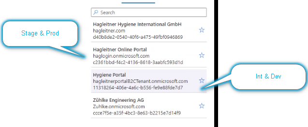

Authorization |
Top Previous Next |
UsertypenB2C: User Management Tool DOrt weredn user verwaltet Dev un Integration eines, Stage und production eines PROD hagleitner ONline Portal  Azure AD B2C hat unterschiedliche Benutzer Typen
User in B2C können local oder federated sein. Mitarbeiter login is fererated User Tabelle im Client Service DatabaseIdentity provider spalte gefüllt = federated user^
Permissions:Permissions sind die kleinsten Atome. Permissions sind vom System vordefiniert. Permission können sich auf bestimme Wirklungsbereich beziehen, das ist aber nicht wirklich in der Permission codier, sonder wird nur manuell über Permission Rolle Zuornung und die Rolle einen Scope hat. Permissions beziehen sich auf bestimmte Objekte (z.B. Devices, ...) ScopesCustomer: Dies Permission wirkt auf einen customer. Ob die Rollen und permissins an kettenkunden vererbt werden ist eine Customer einstellung. Tabelle Customer - Customer User Role Organization: Dies permission wirkt auf eie organization. Zuordnungstabelle: OrganizationUserRole, permission wirkt auch auf alle Kunden. -> Organization limited Global: Dies permission wirkt auf das gesamte System (d.h. auch auf alle Organisationen und alle Customers)
Verbindung zu Xibu und Service APpEine Permission in HsM (z.b. XIBU_TECHNICAN) bedingt eine Rolle in der APp. Die Permissions auf der App werden aber von der App verwaltet.
Zuordnung Customer-User-Role
Rollen sind container für Permissions Zuordnung geht immer über Rolle. Benutzer und ROlle m:n
Roles werden von Hagleitner definiert und sind nicht User-definierbar. SCopes sind von Hagleitner definiert und können nicht vom User definiert werden.
Rollen werden um ein Scope Attribut erweitert dameit gelten die Permissions in dieser Rolle nur für diesen Scope.
Rolle zuweieung bu Benutze hat immer ein Scope Attribut
Es gibt kein Benutzergruppen konzept
Permissions are always additive.
Object = Scope
Permission
Wie kommen User zu Ihren RolesUnterschied zwischen ferated und local Im AD Gruppentypen mit HOP_ AD Gruppen werden in unser Backend synchronisiert. (eignetlich nur sync in eine Richtung) Mapping von Group Names zu Rollen wirdanhand der syntax ActiveDirectoryGroupOrganizationRole Tabelle
|